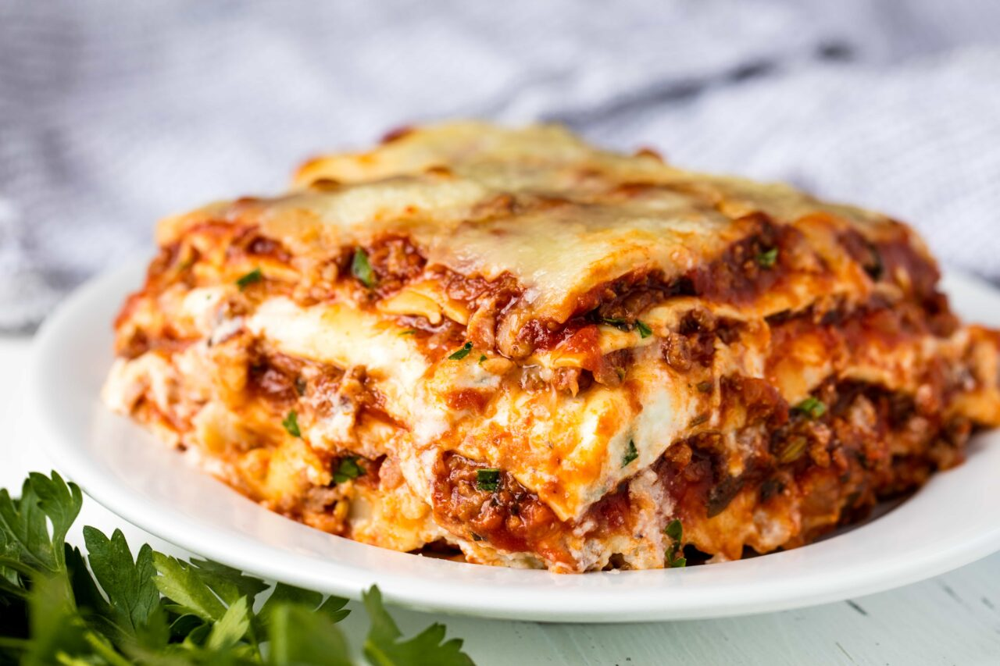

Lasagna

Description
An Italian classic, this hearty recipe is simple yet effective, perfect for dinner parties, and as customisable as all good recipes are. This guide describes the method for making lasagna with minced meat, but it is just as easy to make when substituting this meat for a meat-free equivalent, or a variety of seasonal veg (if you don't mind a bit of chopping!).
Make this dish for a hungry family (and you can even get them involved in the cooking!), or for impressing your friends whilst entertaining - it's also perfect for pairing with wine; we would recommend red if using meat and white if making a veggie version. And of course, any dairy ingredients can also be substituted easily to make the dish suitable for vegans.
Ingredients
Makes approx. 12 servings
- 1kg minced meat (we used beef, but feel free to use any kind you wish - even a mixture or an equal amount of vegetarian alternative)
- 1 tbsp cooking oil
- 1 onion, any colour, finely diced
- 1 carrot, finely diced
- 4 garlic cloves, minced/finely diced
- approx. 400g (or one tin) crushed tomatoes
- approx. 700g passata
- 3 tbsp tomato paste
- 2 stock cubes (beef or vegetable), crumbled
- 1 tsp each dried oregano and basil
- approx. 375g lasagna sheets (fresh or dried - if using fresh, cook according to package instructions before using)
- 500g fresh mozzarella, grated/shredded
For the bechamel sauce:
- 4 tbsp butter
- approx. 60ml flour
- approx. 800ml milk
Steps
- Heat the oil in a deep pan, and add the diced onion and carrot when hot. Sautee for a few minutes until fragrant and the onion turns transluscent, then add the minced garlic and sautee for another minute.
- Add the minced meat or vegetarian alternative and fry until browned and cooked through, breaking it up with your stirring utensil as you go.
- Add the passata, chopped tomatoes, tomato paste, crushed stock cubes, and dried herbs to the pan and mix well to combine before covering and letting the mixture simmer, stirring occasionally until the sauce has thickened and the mixture is tender (approx. 20-30 mins.)
- Meanwhile, you can make the bechamel sauce (takes approx. 10 mins. so you could try to time it with the end of the simmering process). Melt the butter over low-medium heat; remove from the heat and add the flour, mixing until well blended (approx. 30 seconds).
- Reduce the heat to low and return the pot to it, before adding a small amount (approx. 250ml) of the milk, whisking the mixture again until well combined. Add the remaining milk in small increments following this method until all the milk is used (if it seems too thick, you can add more milk; if too liquidly add a little flour).
- Increase heat to medium and continue cooking until it thickens (approx. 6-7 mins.) - a good metric is when it can coat the back of your spoon!
- Time to assemble! First preheat the oven to 180 degrees celsius, and find a baking dish (approx. 9x13 inches).
- Coat the bottom of the dish with a layer of the meat/vegetarian mixture, approx. 2-3cm thick. Follow this with a layer of lasagna sheets, and about a ladle-full of bechamel (make sure to spread it evenly over the lasagna sheets). Repeat this layering process until all the ingredients are used up, ending with a layer of meat/vegetarian sauce and bechamel. Top the lasagna with the mozzarella, then cook for approx. 25 minutes or until the top is golden and bubbling.
- Leave to rest for 5-10 mins. after removing from oven, so the layers have time to set, before slicing and enjoying your hard work!